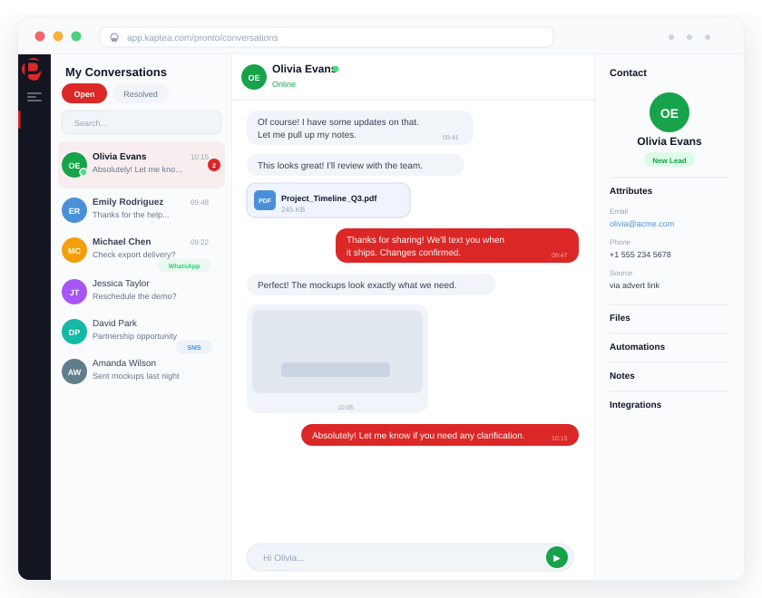

Reach your teams and customers
where they already work.
Pronto connects bidirectionally to Microsoft Teams and Slack — so your customer communications platform talks to your internal collaboration tools, not around them. Incoming channel messages trigger automated workflows. Platform events stream to the channels your ops teams monitor.

Your teams live in Teams and Slack. Your comms platform doesn't know they exist.
Customer comms and internal ops are disconnected
Agents handle customer messages in Pronto but escalate to Teams or Slack for internal resolution — and the two systems never talk. Context gets lost in translation, response times suffer, and nothing is logged in one place.
Critical alerts buried in email
Delivery failures, campaign completions, surge alerts — all routed to an email inbox that ops teams check once a day. By the time someone sees the notification, the window for action has already closed.
Teams messages can't trigger anything
An employee posts in a Teams channel requesting a customer follow-up. Someone copies and pastes the details into a different tool to send the message. Manual, slow, and never auditable — because the platforms don't speak to each other.
Your collaboration tools, connected to your communications platform.
Bidirectional Microsoft Teams and Slack — both directions, one OAuth connection.
Pronto connects to Microsoft Teams via the Microsoft Graph API and to Slack via the Slack Web API — both using OAuth 2.0 for secure, revocable authorisation. Once connected, you select which channels to monitor or send to. Pronto can send messages outbound to any channel, and receive incoming channel messages as triggers for automated actions.
- Microsoft Teams: Graph API, OAuth 2.0, bidirectional channel messaging
- Slack: Slack Web API, OAuth 2.0, bidirectional channel messaging
- Select target channels from Pronto's integrations settings — no webhooks to configure
- Send formatted messages to Teams or Slack channels from Pronto campaigns and workflows
- Receive incoming Teams and Slack channel messages as workflow triggers
- Connection status, test connection, and sync controls from the integrations page
- OAuth token refresh managed automatically by Pronto's token manager
Incoming Teams and Slack messages that trigger real customer actions.
Pronto's workflow engine treats incoming Teams and Slack channel messages as first-class triggers — the same way it handles incoming SMS or WhatsApp. A new message in a monitored channel can automatically fire an SMS, send a WhatsApp template, trigger an email, or branch on conditions. The gap between internal request and external action closes to seconds.
Platform events streamed to the channels your ops teams watch.
Pronto's event streaming layer (PESL) routes platform events — delivery failures, campaign completions, inbound message surges, system alerts — to the collaboration channels where your operations teams are. Real-time notifications reach the right people without anyone needing to log into Pronto to check a dashboard.
- Delivery events, campaign status, and system alerts stream in real time
- Event type filters — send only the events that matter to each channel
- Channel filters — route different event types to different Teams or Slack channels
- Rate limiting to prevent alert flooding during high-volume events
- Webhook HMAC signature verification (X-Pronto-Signature) for all outbound payloads
- SSRF protection — private and localhost URLs rejected at configuration
- Enable, disable, and test each destination from the Pronto admin UI
Teams and Slack in the same unified platform as SMS, WhatsApp, and Voice.
Social messaging in Pronto isn't a bolt-on — it's part of the same workflow engine, the same contact model, the same analytics layer, and the same governance framework that governs every other channel. Teams and Slack interactions are logged, auditable, and visible alongside everything else your organisation sends and receives.
- Unified workflow engine: Teams and Slack triggers alongside SMS and WhatsApp
- Shared contact model — channel interactions linked to the same contact record
- Role-based access controls and division segmentation apply to all integrations
- Workflow execution logs capture every Teams and Slack triggered action
- AI content checks (profanity layer) apply to workflow message actions
- Full audit trail — every action logged with timestamp, user, and outcome
- 16 total integration connectors — CRM, event streaming, and messaging in one framework
2
Bidirectional social channels —
Microsoft Teams and Slack
6+
Collaboration and alerting destinations
via PESL event streaming
Real-time
Event streaming from Pronto
to Teams and Slack channels
16
Total integration connectors
in the Pronto connector framework
"The Teams integration meant our operations team stopped missing critical alerts. Delivery events and campaign completions now route straight to the channel they're watching — no checking dashboards, no catching up after the fact."
Head of Operations
Enterprise Customer Communications Team
Real-time
Delivery events reach Teams and Slack channels as they happen
Zero
Manual copy-paste between Teams and customer comms tools
Both ways
Teams and Slack trigger customer-facing actions without leaving Pronto
One log
All channel interactions auditable in a single unified workflow history
Common questions about Social Messaging
Connect your comms platform to the tools your teams live in.
See how Pronto bridges Microsoft Teams and Slack with your customer communications — bidirectional, automated, and fully auditable.
Book a Demo